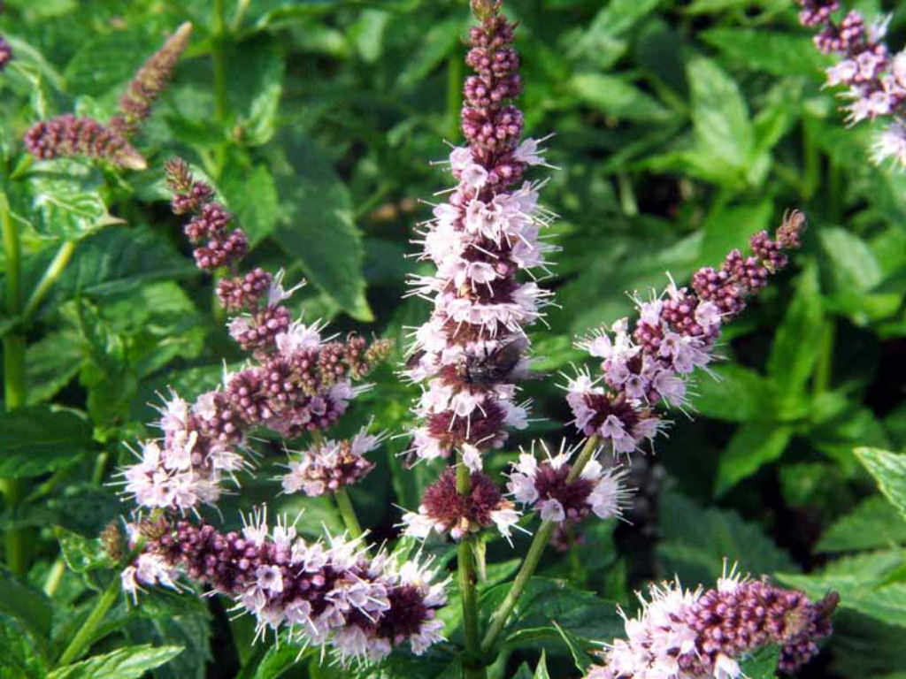

Family: Lamiaceae
Genus: Mentha
Species: M. × piperita
Native to Europe and the Middle East, now cultivated extensively in North America, Asia, and Africa.
Thrives in cool, moist environments and prefers damp soil conditions with plenty of shade.
Relieves irritable bowel syndrome (IBS), eases tension headaches, clears nasal congestion, and reduces nausea.
Used in traditional practices to treat stomach aches, common colds, skin irritation, and muscle pain.
Acts as a natural antispasmodic, antimicrobial, and cooling agent for overall digestive and respiratory health.